Get Started
get-started.Rmdnixtlar provides an R interface to Nixtla’s TimeGPT, a generative
pre-trained forecasting model for time series data. TimeGPT
is the first foundation model capable of producing accurate forecasts
for new time series not seen during training, using only its historical
values as inputs. TimeGPT can also be used for other time
series related tasks, such as anomaly detection and cross-validation.
Here we explain how to get started with TimeGPT in R and
give a quick overview of the main features of nixtlar.
1. Setting up your API key
First, you need to set up your API key. An API key is a string of
characters that allows you to authenticate your requests when using
TimeGPT via nixtlar. This API key needs to be
provided by Nixtla, so if you don’t have one, please request one here.
When using nixtlar, there are two ways of setting up
your API key:
a. Using the nixtla_set_api_key function
nixtlar has a function to easily set up your API key for
your current R session. Simply call
nixtla_set_api_key(api_key = "paste your API key here")Keep in mind that if you close your R session or you re-start it, then you’ll need to set up your API key again.
b. Using an environment variable
For a more persistent method that can be used across different
projects, set up your API key as environment variable. To do this, you
first need to load the usethis package.
library(usethis)
usethis::edit_r_environ()This will open your .Reviron file. Place your API key
here and named it NIXTLA_API_KEY.
# Inside the .Renviron file
NIXTLA_API_KEY="paste your API key here"You’ll need to restart R for changes to take effect. Keep in mind
that modifying the .Renviron file affects all of your R
sessions, so if you’re not comfortable with this, set your API key using
the nixtla_set_api_key function.
Validate your API key
If you want to validate your API key, call
nixtla_validate_api_key.
nixtla_validate_api_key()
#> API key validation successful. Happy forecasting! :)
#> If you have questions or need support, please email ops@nixtla.ioYou don’t need to validate your API key every time you set it up, only when you want to check if it’s valid.
2. Generate TimeGPT forecast
Once your API key has been set up, you’re ready to use
TimeGPT. Here we’ll show you how this is done using a
dataset that contains prices of different electricity markets.
df <- nixtlar::electricity
head(df)
#> unique_id ds y
#> 1 BE 2016-10-22 00:00:00 70.00
#> 2 BE 2016-10-22 01:00:00 37.10
#> 3 BE 2016-10-22 02:00:00 37.10
#> 4 BE 2016-10-22 03:00:00 44.75
#> 5 BE 2016-10-22 04:00:00 37.10
#> 6 BE 2016-10-22 05:00:00 35.61To generate a forecast for this dataset, use
nixtla_client_forecast. Default names for the time and the
target columns are ds and y. If your time and
target columns have different names, specify them with
time_col and target_col. Since it has multiple
ids (one for every electricity market), you’ll need to specify the name
of the column that contains the ids, which in this case is
unique_id. To do this, simply use
id_col="unique_id". You can also choose confidence levels
(0-100) for prediction intervals with level.
nixtla_client_fcst <- nixtla_client_forecast(df, h = 8, id_col = "unique_id", level = c(80,95))
#> Frequency chosen: H
head(nixtla_client_fcst)
#> unique_id ds TimeGPT TimeGPT-lo-95 TimeGPT-lo-80
#> 1 BE 2016-12-31 00:00:00 45.19045 32.60115 40.42074
#> 2 BE 2016-12-31 01:00:00 43.24445 29.30454 36.91513
#> 3 BE 2016-12-31 02:00:00 41.95839 28.17721 35.55863
#> 4 BE 2016-12-31 03:00:00 39.79649 25.42790 33.45859
#> 5 BE 2016-12-31 04:00:00 39.20454 23.53869 30.35095
#> 6 BE 2016-12-31 05:00:00 40.10878 26.90472 31.60236
#> TimeGPT-hi-80 TimeGPT-hi-95
#> 1 49.96017 57.77975
#> 2 49.57376 57.18435
#> 3 48.35815 55.73957
#> 4 46.13438 54.16507
#> 5 48.05812 54.87038
#> 6 48.61520 53.312843. Plot TimeGPT forecast
nixtlar includes a function to plot the historical data
and any output from nixtla_client_forecast,
nixtla_client_historic,
nixtla_client_anomaly_detection and
nixtla_client_cross_validation. If you have long series,
you can use max_insample_length to only plot the last N
historical values (the forecast will always be plotted in full).
nixtla_client_plot(df, nixtla_client_fcst, id_col = "unique_id", max_insample_length = 200)
#> Frequency chosen: H